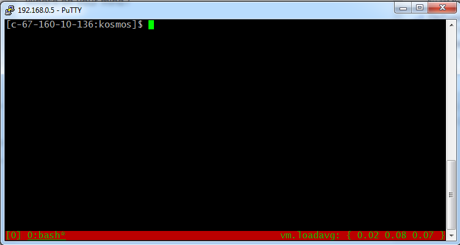
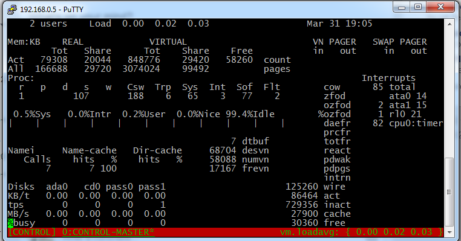
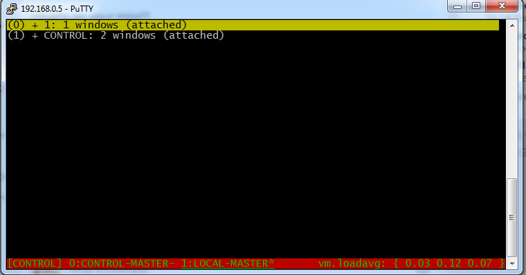
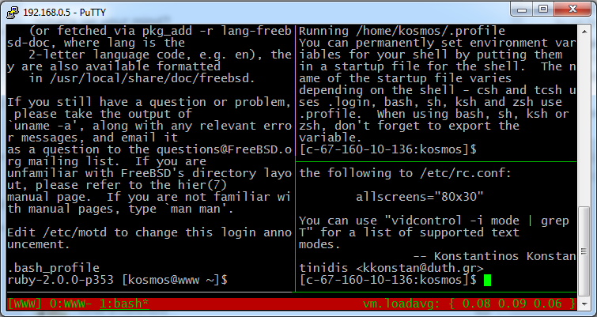

Preserving ssh-agent credentials in Tmux
Tags:Tmux is a terminal multiplexor. It lets you manage many simultaneous running shells from a single ssh protected console window. It has a flexible windowing scheme that gives you multiple groups of resizable panels and stateful protection of your terminal sessions wether you wilfully or accidentally detach a working session. It’s a must-have for a console ssh user, but there can be problems with maintaining ssh-agent (passwordless) connections after logout, which requires some setup tactics to preserve.
SSH practice
Typically, with ssh, you’d take a copy of your public key on Host A, and drop it into ~./ssh/authorized_keys on Hosts B, C, and D. On Host A, you’d start the agent, authenticate once, then gain secure access to hosts B, C, and D without entering a password.
The agent invokation might go something like this:
1 2 3 4 5 | HOST_A > ssh-agent bash (subshell entered) HOST_A > ssh-add Enter passphrase for /home/myuser/.ssh/id_rsa: <you enter passphrase> Identity added: /home/myuser/.ssh/id_rsa (/home/myuser/.ssh/id_rsa) |
Then doing:
1 2 3 | HOST_A > ssh host_b (passwordless login) HOST_B > |
Will get you into Host B with no passphrase.
A lot of stateful work is held in tmux shells. Typically you may have a dozen or more of these passwordless ssh sessions running, all connected to various hosts and to different projects. What you do not want to have happen is to lose the agent authentication for all these connections when you detach and reattach a tmux session, something often done when switching from a workstation to a laptop, for instance. Losing ssh passwordless connections is a huge headache to deal with.
Depending on how you call tmux directly will determine if you lose passwordless authentication on disconnect. If you start tmux with
1 | HOST_A> ssh-agent tmux <-- big mistake! |
Everything will run as expected until you disconnect. Then suddenly when you reconnect, all your subshells will have lost their authentication, and will fallback to manual passphrase entry if they are reconnected to an ssh host. The tactic I want to show you is how to use indirection to preserve all your agent sessions in tmux, so that detaching and reattaching will leave everything unaffected.
The configuration road-map
Essentially, you start a top-level tmux session without ssh agent. Let’s call this session the CONTROL session. The CONTROL session is a wrapper that prevents ssh from being informed about connection information. Within CONTROL, you create windows, each establishing a single ssh-agent tmux subsession to be used generally with a single remote host. Within each of these nested tmux ssh sessions, you can add windows and panels. Each window and panel will inherit passwordless authentication for free. When you detach or disconnect, all the capabilities of each terminal are preserved, no matter what machine you login with or what network you’re using.
I will try to use the following terms to describe tmux by it’s stucture in this scenario. It may not agree with the docs. Basically a tmux process consists of one or more sessions, which consist of one or more windows, which consist of one or more panels.
1 2 | tmux --> sessions --> windows --> panels named named shells |
As shown in the diagram above, sessions and windows can be named. These names display on a status bar at the bottom of the tmux screen if the following configuration file is used in ~/.tmux.conf:
1 2 3 4 5 6 7 8 9 10 11 12 13 | # set putty window > translation is-8859-1 # export TERM=screen-256color # http://blog.gmane.org/gmane.comp.terminal-emulators.tmux.user/month=20101101 # http://blog.ijun.org/2011/09/install-tmux-on-freebsd-tutorial-step.html set -g default-terminal screen-256color set -g status-bg red set -g status-fg green set -g status-right '#(sysctl vm.loadavg)' setw -g window-status-current-attr underscore bind r source-file ~/.tmux.conf setw -g utf8 on set -g status-utf8 on |
Overall we aim to have some kind of structure similar to the following diagram, with a CONTROL, LOCAL and WWW sessions as examples.
CONTROL is the wrapper session, and not used for anything other than housing the other sessions. LOCAL is a graph of terminals being used on the main host. WWW is the set of terminals on a web machine connected by ssh agent passwordless logins.
1 2 3 4 5 6 7 8 9 10 11 12 13 14 15 16 17 18 19 20 21 22 23 24 25 26 27 28 29 30 31 32 33 34 35 36 37 | tmux | + CONTROL session | +---> CONTROL MASTER | +---> LOCAL MASTER (ssh-agent) | LOCAL | | | +--->LOCAL (Window 1) | | | | | +---> Panel 1 (shell) | | | | | +---> Panel 2 (shell) | | | | | +---> Panel 3 (shell) | | | +--->LOCAL (Window 2) | | | +---> Panel 1 (shell) | | | +---> Panel 2 (shell) | +---> WWW MASTER (ssh-agent) | WWW | | | +--->WWW | | | | | +---> Panel 1 (shell) | | | | | +--->WWW | | | +---> Panel 1 (shell) | | | +---> Panel 2 (shell) (ad nauseum...) |
Switching between sessions on this tree is accomplished by CTRL-B s, while switching between each session’s windows is done with CTRL-B w. CTRL-B <arrow> moves focus between panels in a window. You do all your work inside panels each containing a shell prompt. Panels can be resized, even to look like windows. CTRL-B ALT <arrow> resizes a panel by one character in the arrow-direction, and CTRL-B z toggles maximize/minimize on a panel to full-screen.
To start our setup we need to issue the tmux command > tmux. This will create a session and a window with a shell and a status bar.

We need to rename the session to CONTROL by issuing CTRL-B $ editing at the prompt on the status bar. The current sesssion name always appears on the far left, contained within square brackets.

We also need to rename the window (window zero) to CONTROL-MASTER by issuing CTRL-B , and overwriting the text there with “CONTROL-MASTER”. The current window in tmux is always underlined on the status bar.

The CONTROL session should not really be used for anything. It’s just a wrapper to hold the leaders of other sessions. After we have named it, it’s best to block input to this window with some kind of system status tracker like top, systat or tail -f /var/log/messages.

To create our first ssh-agent authenticated session: LOCAL, we open a new window in the CONTROL session by typing CTRL-B c. LOCAL will just be used for shells spawned on the localhost, but we still want the capability of quick passwordless access to our other machines from here. We need to name this window LOCAL-MASTER via CTRL-B ,. When we finish setup in this window, it will become the top-level authenticator for all other working LOCAL ssh connections.
Next, we setup the ssh-authenticator for LOCAL session by:
1 | unset TMUX; ssh-agent tmux |
We have to unset the TMUX environment variable to unlock the safety switch placed in by the TMUX authors. Then, when the nested tmux shell boots, you will see two status bars at the bottom of the screen:

At this point, type ssh-add and enter your passphrase.
Note that this can be quite confusing to look at. We are still in the CONTROL session, but have established a new, unnamed session for LOCAL. It’s important to remember a few things about being in the CONTROL session.
-
What you see in the CONTROL session window will vary later on, so you can’t trust its contents.
-
The bottom status bar in this session is the only relevant one, and belongs to CONTROL. This means we are in the CONTROL session context.
-
This CONTROL window X is shared in the LOCAL session context as Window zero.
We are still in the CONTROL session at this point, but have setup an anonymous session for LOCAL. Now let’s change context to LOCAL by using CTRL-B s (the session menu) and selecting the session that is not CONTROL.

Note the status bar is back to one, but the window contents did not change. It is a shared window. To complete bootstrapping this session we need to:
a. Use CTRL-B , to change the window name to LOCAL.
b. Use CTRL-B $ to change the session name to LOCAL.
c. Start a copy of something like top, systat or tail -f /var/log/messages to block input.

To establish sessions with other machines, we simply repeat the steps above:
CTRL-B sto select the CONTROL session.CTRL-B cto open a new CONTROL window.CTRL-B ,to change the window name to «session_name»-MASTERunset TMUX; ssh-agent tmuxssh-add <enter passphrase>CTRL-B sto select the context of new anonymous session we just made.CTRL-B ,to change the window name to «session_name»CTRL-B $to change the session name to «session_name»- Login to the associated remote host for this session, and run top, systat, or tail -f to block input.
Once you have all your sessions established, you can switch to a given session, and open any number of windows with CTRL-B c and panels with CTRL-B & (to the right) or CTRL-" (below). All of them will have their ssh-agent sessions and runtime preserved between sessions.
